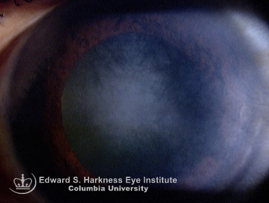

Interstitial keratitis (IK)
* Định nghĩa:
+ Viêm giác mạc nhu mô
Bệnh lý viêm giác mạc nhu mô được biết do bởi các nguyên nhân: giang mai bẩm sinh, herpes simplex, herpes zoster, Epstein-Bar virus, lao và leprosy.
Biểu hiện lâm sàng: sẹo nhu mô nông, viêm giác mạc nhu mô hoại tử và viêm giác mạc hình đĩa.

Hình: Đây là một trường hợp viêm giác mạc nhu mô do Herpes simplex, giai đoạn sẹo nhu mô hình đĩa